levels instead of
levels instead of  .
.
Construction
Unroll:
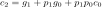
, and so on. For a group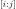
,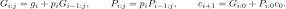
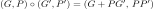
is associative, so all prefixes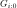
can be computed by a parallel-prefix tree (tree height reduction):- 4-bit CLA blocks with a second level of lookahead: delay
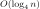
levels; - Kogge–Stone:
 levels,
levels, 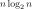
operators, fan-out 2, many wires; - Brent–Kung:
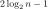
levels, about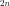
operators.
Simpler alternatives: carry-skip (bypass a block when
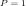
) and carry-select (precompute both block sums), see bypass and select.Picture
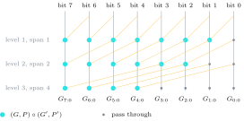
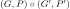
over doubling spans, so every carry is ready after levels.
Kogge–Stone for 8 bits: at level  each position combines with the one
each position combines with the one
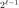
to its right; three levels.Intuition
Instead of waiting for the carry to walk across the word, every block asks in parallel "would I produce a carry, and would I pass one on?", and the answers are combined like a tournament bracket.
Pitfall
Logarithmic depth is paid in wiring: Kogge–Stone's long wires and fan-out make it large and power hungry, so real designs choose sparse trees or hybrid carry-select schemes.